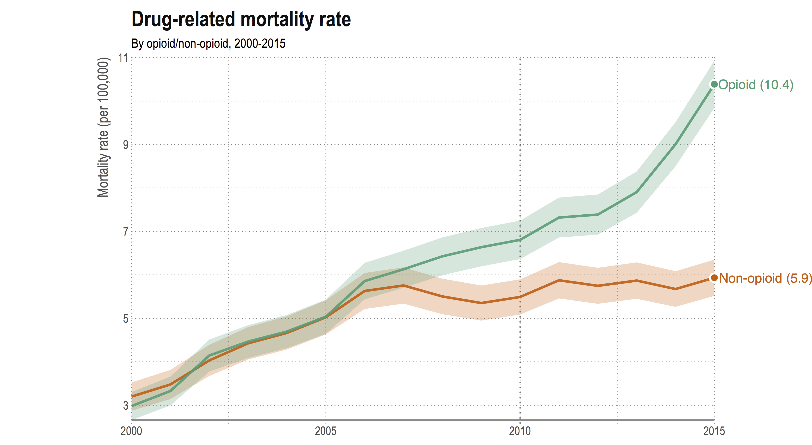
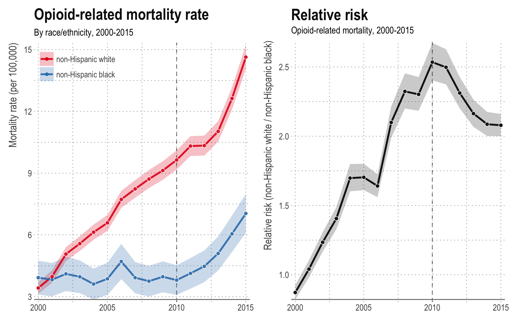
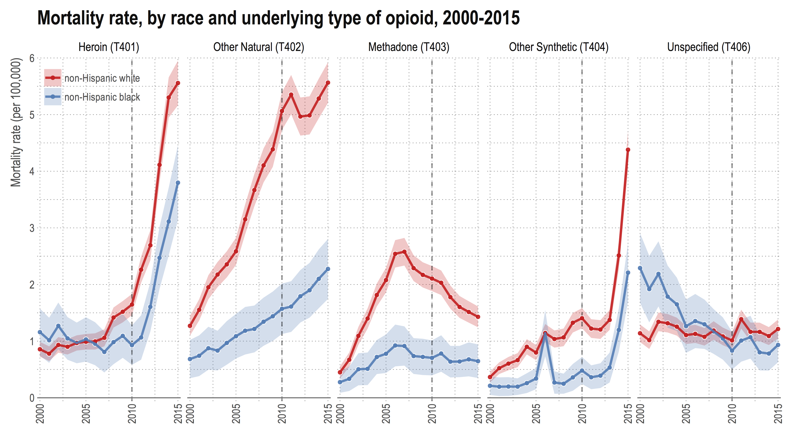
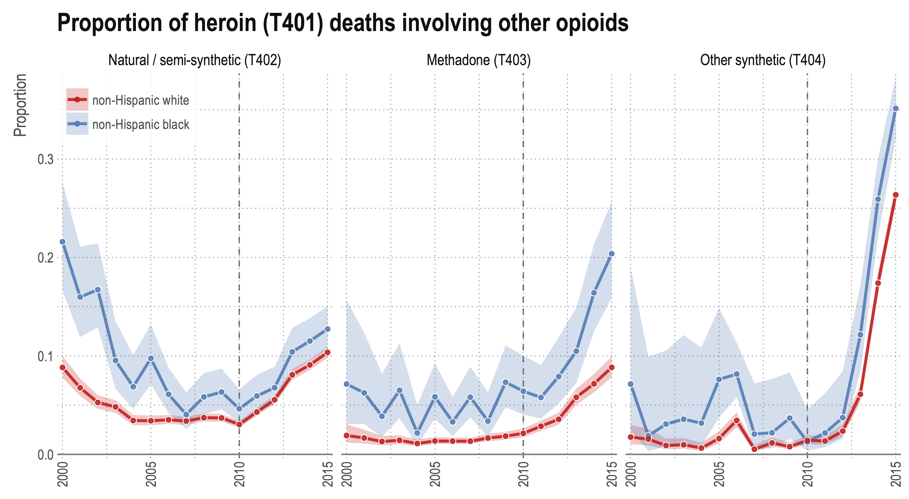
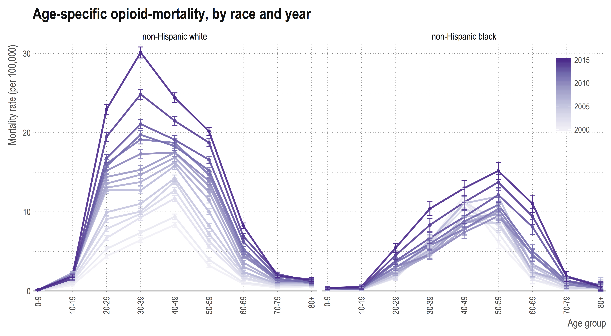
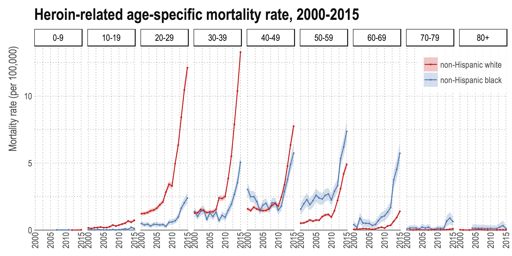

Opioid mortality by race: from divergence to convergence
Opioid-related mortality in the United States has been rising steadily since 2000. The opioid mortality rate has more than tripled since over the fifteen year period 2000–2015, and shows no signs of declining — in fact, the rate of increase has accelerated in recent years. This is unique to opioid-related drug deaths, with the non-opioid mortality rate remaining fairly level since 2005. The so-called ‘opioid epidemic’ has gained national attention and become an important part of the political agenda.
While the epidemic has also gained widespread media attention, coverage tends to focus on overall trends in deaths or for the white population only. In a recent paper presented at PAA 2017, we focused on differences in opioid mortality by race, to see how trends in underlying cause of death, opioid types and age patterns differ.

2000–2015: A story in two stages
While mortality rates were similar for both races in 2000, the opioid mortality rate for the non-Hispanic white population is now much higher than for the non-Hispanic black population. In 2015, the white opioid mortality rate was more than two times the black opioid mortality rate. This observation is different to what we usually see — by most other measures of mortality, the black population is worse off.
The combination of high opioid death rates, as well as a lower overall death rate compared to the black population, means that the impact is more noticeable in the white population. Opioid drug overdoses comprise some of the ‘deaths of despair’ (i.e. deaths due to drugs, alcohol and suicide) that Case and Deaton attributed to causing an increase in the mortality rate in the non-Hispanic white population aged 45-54.
However, looking over the period 2000–2015, we see that patterns in the race-specific opioid mortality rate exhibit two distinct periods:
From 2000–2010, shows a divergence in opioid mortality, with the non-Hispanic white mortality rate steadily increasing while the non-Hispanic black mortality rate remains fairly constant.
Since 2010 the opioid mortality rate has been increasing at a similar pace for both the white and black populations. As a consequence, the relative risk of opioid mortality in the white to black populations reached a peak in 2010 at around 2.5, but has since declined.

From prescription drugs to heroin-fentanyl mixes
Breaking down the opioid mortality rate by underlying type of opioid, it is clear that there has been a shift in the types of opioids driving the increased mortality rates. In the first period, from 2000–2010, increases, which were mostly observed in the white population, were driven by an increased mortality rate due to other natural and semi-synthetic opioids — namely oxycodone and hydrocone, sold under the brand names OxyContin and Vicodin.
Since 2010, however, there has been a noticeable shift in the relative importance of deaths from heroin and other synthetic opioids. This is true for both races. Other synthetic opioids largely consist of fentanyl. Pharmaceutical fentanyl is a synthetic painkiller that is 50–100 times more powerful than morphine and is used for treating severe pain. However, the presence of illicitly-made fentanyl in the form of acetyl- and furanyl-fentanyl has increased in recent years. These products are often mixed with heroin or cocaine to increase potency.
In 2010 OxyContin was reformulated to be less easily abused, making it harder to crush (and therefore be snorted or dissolved and injected). This reformulation may explain some of the leveling-off in the white death rate since 2010. In addition, previous research has found strong evidence to suggest that much of the increase in heroin overdoses is due a substitution effect since the reformulation of OxyContin.

Compared to earlier years, a larger proportion of opioid deaths now involve more than one type of opioid. In 2015, the proportion of all opioid deaths that involved two or more types of opioids was more than 25% for the black population and around 22% for the white population. This was an increase from around 12% of all deaths for both races in 2010.
Looking specifically at heroin deaths, the proportion of deaths involving other types has increased across the board since 2010 for both races. In particular, since 2012 there has been a ten-fold increase in the proportion of heroin deaths also involving other synthetic opioids, namely fentanyl. In 2015, around 35% of all heroin deaths in the black population involved other synthetic opioids.

Black opioid deaths tend to occur at older ages
Since 2000, the age distribution of opioid deaths in the white population has been shifting to younger ages, with the highest mortality rate occurring in the 30-39 age group. In contrast, the age distribution for the black population has been shifting to older ages, and the peak mortality rate occurs in the 50-59 age group. This somewhat surprising observation is true for deaths relating to all types of opioids. Focusing specifically on the heroin mortality rate, the differences in age distributions creates a mortality ‘cross-over’, where black heroin mortality rates are higher at older ages.


An issue for both races
The nature of the epidemic has changed over the past fifteen years, and had different impacts on the black and white populations. Importantly, there has been an increase in mortality due to opioids since 2010 for both races, and this trend shows no sign of slowing. A better understanding of the differences across race and how they relate to the use of other drugs, place of residence, and socioeconomic status, is necessary to improve health policy and rehabilitation programs across the country.
Notes
This post is based on a paper presented in the session on Trends and Causes of Adult Mortality in the United States at PAA 2017. It is joint work with Magali Barbieri and Mathew Kiang. All figures were derived from multiple cause of death data available from the National Center for Health Statistics. The code to reproduce graphs from the raw data is available here.